Celebrando 48 anos

27, 28 e 29 de novembro de 2026
PIB Ouricuri — Avenida Presidente Kennedy, 172
Acompanhe
nossa programação
48 anos · Até aqui e para sempre
-
27NOV
Sexta-feira
- Conferência PIB
-
28NOV
Sábado
- A Missão Jacaré
-
29NOV
Domingo
- PIB RUN
- Culto de Gratidão
Convidado: Pr. Diogo
Domingo · 29 de novembro de 2026
48 anos — Até aqui e para sempre
Venha correr com a gente! Reúna a família e os amigos e celebre conosco, passo a passo, a fidelidade de Deus em cada um desses 48 anos.
Inscreva-se na PIB RUN